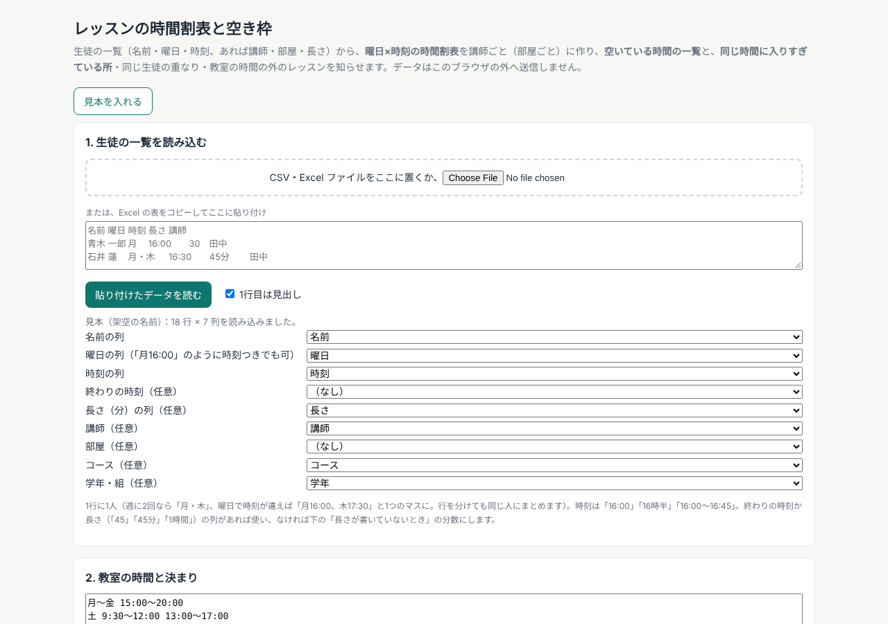

レッスンの時間割表と空き枠
個人レッスン・少人数の教室のためのツールです。生徒の一覧（名前・曜日・時刻）を読み込むだけで、曜日×時刻の時間割表を講師ごとに作り、空いている時間を一覧にします。
- 時間割表：月〜日の列に、時刻の順で「16:00 青木 一郎 ピアノ」と並べた表を、講師ごと（部屋ごと）に A4 横1枚で印刷します。教室の休みの時間は灰色にします
- 空き枠の一覧：教室の時間のうち、レッスンの入っていない時間を曜日ごとに「15:00〜16:00（2コマ）」と一覧にします。体験レッスン・振替・新しい生徒の案内に使えます（生徒の名前は載りません）
- 重なりを知らせる：同じ講師に同じ時間で2人入っている所（グループレッスンなら「3人まで」などの上限を超えた所）、同じ生徒の2つのレッスンの重なり、教室の時間の外のレッスン、同じ部屋に同じ時間で別の講師
- 講師・曜日ごとの集計：講師ごとの生徒数・週のコマ数・時間、曜日ごとのコマ数、空き枠の合計
ソフトのインストールは不要で、いつものブラウザで動きます。
お試し版はすべての機能を使えて、計算するのは生徒の一覧の先頭10人までです。決済が終わると、そのまま製品版の画面に移動します。ブックマークしておけば、新しい年度や生徒が増えたときにも何度でも使えます。
お試し版で印刷すると、下に店の名前と場所が1行入ります。製品版では、入れるかどうかを選べます（初めは入りません）。

見本のデータ（架空の名前）で作った例です。
こんなときに
- 時間割を Excel のマスに名前を書き込んで作っていて、生徒が増えたり曜日を変えたりするたびに作り直している
- 「空いている時間はありますか？」という問い合わせに、時間割表を目で追って答えている
- 講師が何人かいて、講師ごとの担当の時間割と、だれが週に何コマ持っているかを別に数えている
- 時刻を変えたあとで、前の生徒のレッスンと重なっていたことに気づく
できること
- 読める生徒の一覧：1行に1人で「名前」「曜日」「時刻」の列。あれば「長さ（分）」「終わりの時刻」「講師」「部屋」「コース」「学年」の列も使います。列は見出しから自動で選び、変えることもできます
- 曜日と時刻の書き方：「月」「月曜日」「月・木」「月〜金」。時刻は「16:00」「16時半」「16:00〜16:45」。曜日と時刻が1つのマスでも読めます（「月16:00」「月16:00、木17:30」）。長さは「45」「45分」「1時間」「1:00」。長さがない生徒は、決めた分数（30分など）にします
- 教室の時間：「月〜金 15:00〜21:00」「土 9:00〜12:00 13:00〜17:00」「日 休み」のように書きます。講師ごとに違うときは「田中 月・水・金 16:00〜20:00」の行を足します
- 同じ時間に見られる人数：1人（個人レッスン）から20人まで。グループレッスンなら、その人数を超えたときだけ知らせ、空き枠には「あと何人入れるか」を書きます
- 印刷：時間割表（講師ごとに A4 横1枚。刻みは10・15・30・60分）、空き枠の一覧、生徒ごとの一覧（メモ欄つき）
- 保存：Excel ファイル（.xlsx）に、講師ごとの時間割（曜日×時刻）・レッスンの一覧（1行1コマ）・空き枠・生徒ごと・確かめたい所のシート。CSV はレッスンの一覧と空き枠
- CSV（UTF-8・Shift_JIS）と Excel ファイル（.xlsx）を読めます。Excel の表をコピーして貼り付けても使えます
できないこと（購入前にご確認ください）
- 時間割を自動で組む（重ならないように生徒の時刻を決める）ことはしません。重なりと空きを知らせるだけです
- 毎週同じ曜日・時刻のレッスンだけを扱います。隔週・月2回・「第1・3土」や、日付ごとの振替・休講は扱いません（月ごとのレッスン日には 月ごとのレッスン日と回数、振替の残りには 振替レッスンの残り回数 があります）
- 予約の受付（Web のフォーム）や、生徒へのメール・LINE での送信はできません。印刷か、PDF に保存してお使いください
- 月謝の計算はしません（月謝の請求額の一覧 があります）
- スマートフォンでは操作しにくいため、パソコンでお使いください
Excel だけで作るなら
講師ごと・曜日ごとのコマ数は、B 列が曜日、E 列が講師なら =COUNTIFS(B2:B100,"月",E2:E100,"田中") で数えられます。
重なりは、終わりの時刻の列を足して（C 列が開始、D 列が長さ〔分〕なら F 列に =C2+D2/1440）、表を「講師→曜日→開始」の順に並べ替え、G3 に =IF(AND(E3=E2,B3=B2,C3<F2),"重なり","") を入れて下までコピーすると、すぐ前の行と重なっている行に印が付きます（長いレッスンが2つ以上あとの行と重なるときは、この式では見つかりません）。
手作業で大変なのは、曜日×時刻のマスに名前を並べた表を作り直すときと、空いている時間を探すときです（教室の時間から、レッスンの入っている時間を曜日ごとに引いていく）。このツールは、一覧を読み込むだけで講師ごとの時間割表と空き枠の一覧を一度に作ります。
よくある質問
| データはどこかに送られますか？ | 送られません。読み込み・計算・印刷・保存はすべてお使いのブラウザの中で行います。教室の時間・表題・教室の名前などの設定だけをブラウザに保存し、生徒の名前は保存しません。 |
|---|---|
| 週に2回来る生徒は？ | 「月・木」のように1つのマスに書くか、行を分けて書いてください。同じ名前（と学年）の行は1人にまとめます。曜日で時刻が違うときは「月16:00、木17:30」と書けます。 |
| 「入りすぎ」は、どう判定しますか？ | 同じ講師（部屋ごとにしたときは同じ部屋）の同じ曜日で、同じ時刻にレッスンを受けている人数が、決めた人数（初めは1人）を超えた時間を知らせます。16:30 に終わるレッスンと 16:30 に始まるレッスンは重なりとしません。 |
| 何人まで使えますか？ | 製品版は人数の制限はありません（3,000人・講師30人の計算を、手元のパソコンで約0.1秒で終えることを確かめています）。 |
安心してお使いいただくために
- 表はお使いのブラウザの中だけで処理し、サーバーには送信しません
- 動作環境：最新版の Chrome・Safari・Edge・Firefox（パソコン）
- 説明どおりに動かない場合は、ご購入から7日以内にご連絡いただければ返金します
月ごとのレッスン日と回数には 月ごとのレッスン日と回数、予約の表どうしの重なりには 予約の重なりチェック、シフトの時間帯ごとの人数には 時間帯ごとの人数と不足チェック もあります。